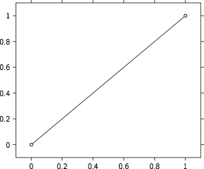
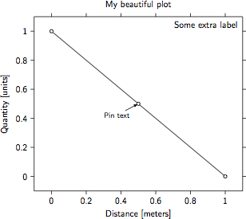
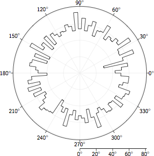

The artist package can be used to create beautiful plots. The output will be a TeX file that can be included in a larger document or compiled on its own. This page describes the steps needed to create a plot, the options that are available, and provides some examples.
The bare minimum to create a simple plot are:
from artist import Plot
graph = Plot()
graph.plot([0, 1], [0, 1])
graph.save('simple_plot')
This imports the artist.plot.Plot class from artist, then initiates a single plot. In this plot multiple lines and marks can be drawn. In this case one line is draw from (0, 0) to (1, 1). Finally the simple_plot.tex file is created. To directly get viewable output use save_as_pdf instead of save to output a .pdf file instead of a .tex. The result:
Once you have initiated the Plot you can add a title and axis labels. Here is an example:
from artist import Plot
graph = Plot()
graph.plot([0, .5, 1], [1, .5, 0])
graph.set_title('My beautiful plot')
graph.set_ylabel('Quantity [units]')
graph.set_xlabel('Distance [meters]')
graph.add_pin_at_xy(.5, .5, 'Pin text', location='below left')
graph.set_label('Some extra label')
graph.save('labels_plot')
This examples adds a title to the plot, axis labels, text connected to a data point, and finally a label to the plot. This looks like this:
Besides cartesian axes there is also support for polar axes. These are initiated by the artist.plot.PolarPlot:
import numpy as np
from artist import PolarPlot
graph = PolarPlot()
x = np.random.uniform(0, 360, 5000)
n, bins = np.histogram(x, bins=np.linspace(0, 360, 91))
graph.histogram(n, bins)
graph.save('polar_plot')
This imports the artist.plot.PolarPlot class from artist. Then a histogram is created with bins ranging from 0 to 360. The result:
For further examples of the capabilities of artist, see the Demo plots (pdf). The source code for these plots can be found on artist’s GitHub page.
To include an artist plot in a LaTeX document use the \input command. For example:
\begin{figure}
\input{figures/polar_plot}
\caption{A histogram of random data in a polar coordinates.}
\end{figure}
The figure will be compiled when you compile your document. This requires that the packages used by artist are added to the preamble of your document. Artist uses the TikZ, PGFPlots, siunitx, and relsize packages, some require additional libraries or options. Include the following in the preamble to support artist plots:
\usepackage{tikz}
\usetikzlibrary{arrows, pgfplots.groupplots, external}
\usepackage{pgfplots}
\pgfplotsset{compat=1.3}
\usepgfplotslibrary{polar}
\usepackage[detect-family]{siunitx}
\usepackage{relsize}
{kind=link}
{kind=link}
{kind=link}